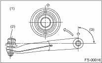

FRONT SUSPENSION > Front Transverse Link
Assemble in the reverse order of disassembly.
CAUTION:
Install the front bushing in proper direction as shown in the figure.

|
(1) |
Face the bushing toward the center of ball joint. |
|
(2) |
Ball joint |
|
(3) |
90°±3° |
1. Attach the rear bushing to the transverse link and align to the aligning marks.
2. Attach and tighten a new self-locking nut.
NOTE:
While holding the rear bushing so as not to change position of aligning marks, tighten the self-locking nut.
Tightening torque:
190 N·m (19.4 kgf-m, 140 ft-lb)